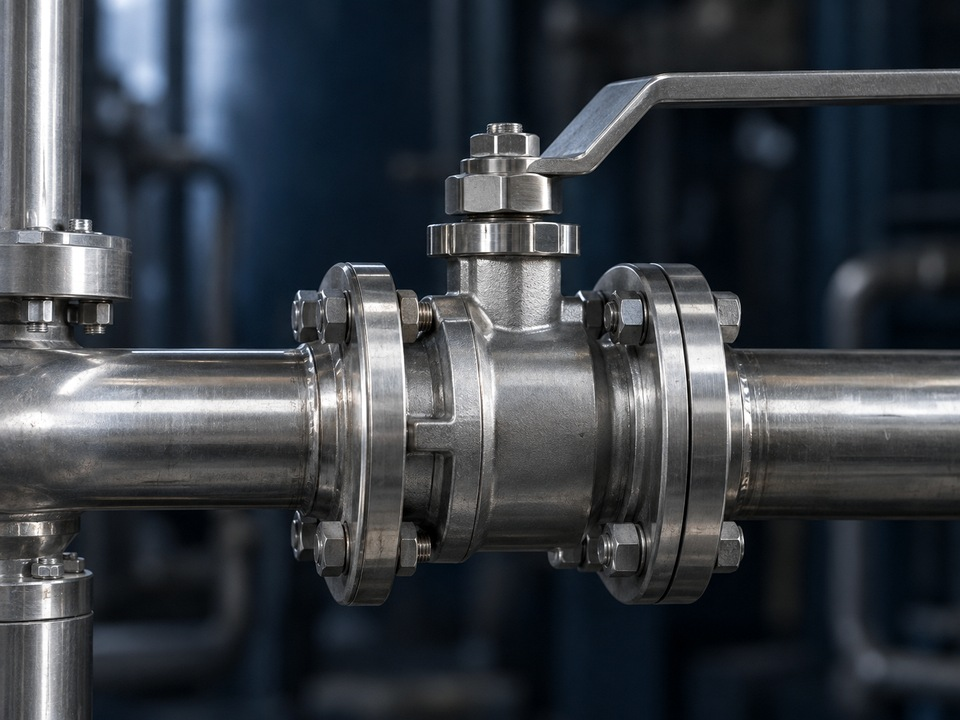
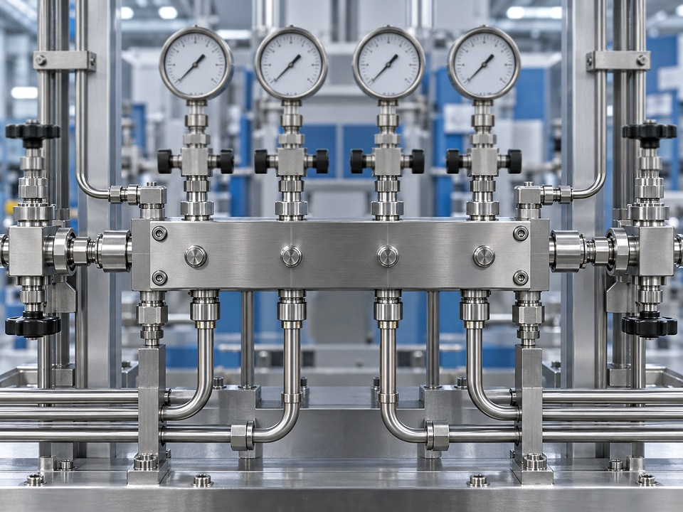

Authentic Innovation현장에 필요한 기술로 실질적인 혁신을 만듭니다.FLOVEX
지능형 유체 기술로 산업과 일상의 더 나은 변화를 만듭니다.
더 강한 산업환경을 만듭니다
엔지니어링과 데이터, 현장 전문성을 연결해 더 안전하고 명확하며 변화에 유연한 유틸리티 시스템을 구축합니다.
Vision & Mission

Precision Performance모든 연결에서 측정 가능한 품질을 구현합니다. Global Collaboration지역과 분야를 넘어 전문성을 공유합니다.
Global Collaboration지역과 분야를 넘어 전문성을 공유합니다.Building brighter futures,
one system at a time.
산업 유체 시스템을 바라보는 새로운 기준을 만드는 것이 FLOVEX의 사명입니다. 지속적인 혁신과 책임 있는 엔지니어링으로 고객과 지역사회, 환경에 오래 남는 가치를 제공합니다.